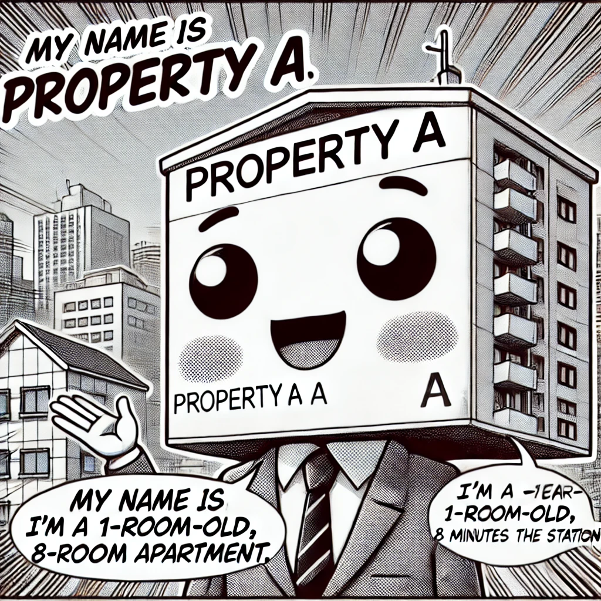
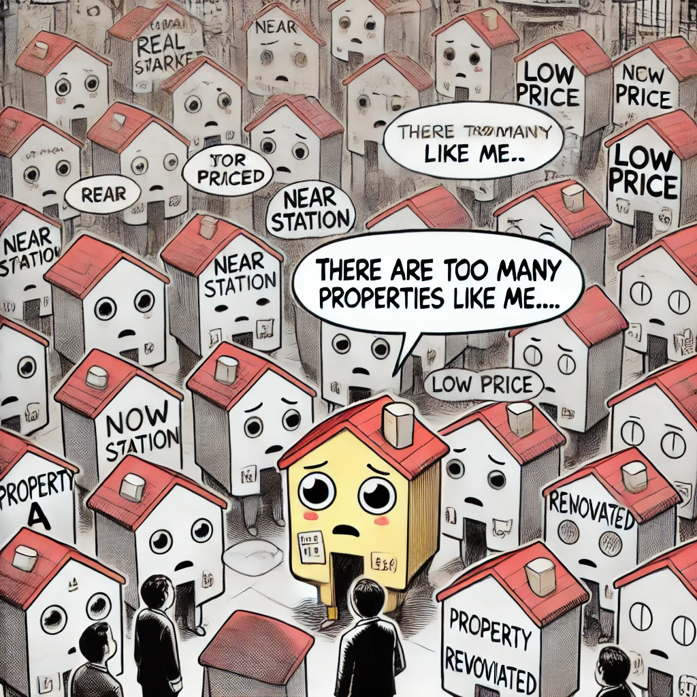
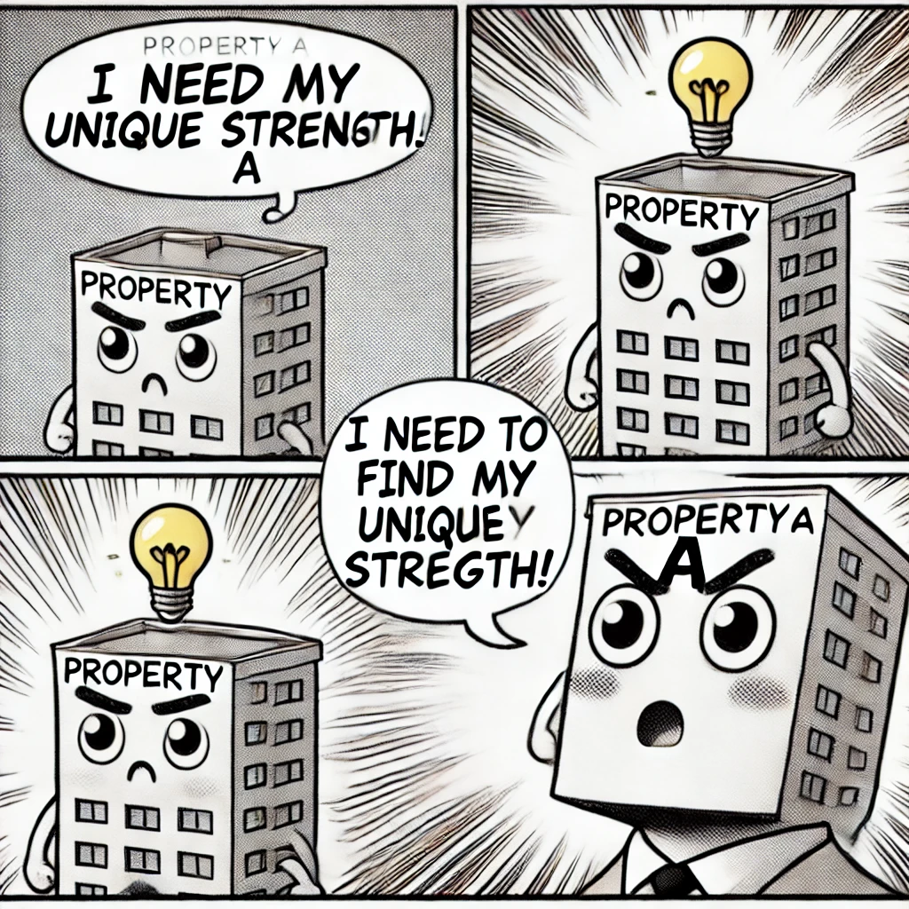

1. 俺の名前は「物件A」
「俺の名前は物件A。築10年、駅徒歩8分のワンルームマンションだ。」
「最近、俺のオーナーはECサイトを立ち上げて、 俺をオンラインで売り込もうとしている。でも、なかなかうまくいかないんだ。」
2. 競争が激しいレッドオーシャンの世界
オーナーは最初、よくある不動産ポータルサイトに俺を掲載した。
「でもな、俺みたいな物件は星の数ほどある。 駅近、安い、リフォーム済み…。そんなの、どこでも売ってるんだよ！」
- 🏢 似たような物件が多すぎる
- 💰 価格競争で利益が下がる
- 👀 目立たず、埋もれてしまう
「このままじゃ、俺は売れないままだ…」
3. ニッチ市場を見つけてブルーオーシャンへ
そんな時、オーナーはあるアイデアを思いついた。
「そうだ！ 他の物件と違う『俺だけの強み』を前面に押し出そう！」
✅ 1. ターゲットを絞る
オーナーは「ペット可×ワークスペース付き」のニッチ市場に特化したECサイトを作ることにした。
「在宅ワークOKでペットと住める物件… これは需要がある！」
✅ 2. 独自のECサイトを構築
「ありきたりなポータルサイトじゃなく、オリジナルのECサイトを作ろう！」
- 🛒 物件のストーリーを載せる（俺の魅力を最大限に伝える！）
- 📸 写真や動画を充実させる（バーチャルツアーを導入）
- 💬 ターゲット向けのコンテンツを発信（ペットとの暮らしブログ）
✅ 3. SNSと広告を活用
「サイトを作っただけじゃダメだ！人を呼び込まないと！」
- 🐦 Twitterでペット可物件の情報を発信
- 📢 Facebook広告でターゲット層にアプローチ
- 🎥 YouTubeで物件紹介動画を公開
4. まとめ：物件のECサイト運営はこうする！
「こうして、俺のオーナーは無事に新しい入居者を見つけたのさ！」
「おさらいすると、ECサイト運営はこうするんだ！」
- ✅ ターゲットを絞る（ニッチ市場を狙え！）
- ✅ 独自のECサイトを作る（強みを活かしたサイト設計）
- ✅ SNSと広告で集客（情報発信を続ける）
「レッドオーシャンに埋もれるな！ブルーオーシャンを作れ！」